Define (r,𝜃,ϕ) coordinates by
|
| (574) |
|
| (575) |
where (R,ϕ,Z) are the cylindrical coordinates and R0 is a constant. The above transformation is shown graphically in Fig. 40.
The Jacobian of (r,𝜃,ϕ) coordinates can be calculated using the definition. Using x = R cosϕ, y = R sinϕ, and z = Z, the Jacobian (with respect to the Cartesian coordinates (x,y,z)) is written as
Next, we transform the GS equation from (R,Z) coordinates to (r,𝜃) coordinates. Using the relations R = R0 + r cos𝜃 and Z = r sin𝜃, we have
|
| (577) |
|
| (578) |
|
| (579) |
|
| (580) |
The GS equation in (R,Z) coordinates is given by
|
| (581) |
The term ∂Ψ∕∂Z is written as
Using Eq. (582), ∂2Ψ∕∂Z2 is written as|
| (584) |
| sin𝜃 = 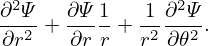. |
| cos𝜃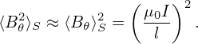 = −Z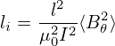 |
|
| (585) |
| cos𝜃 = 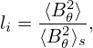 |
|
| (586) |
Summing the the right-hand-side of Eq. (583) and the expression on line (587) yields
|
| (589) |
Using these, the GS equation is written as
| 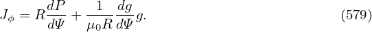+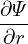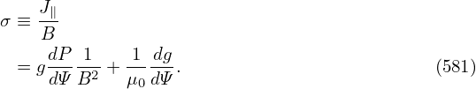+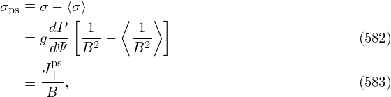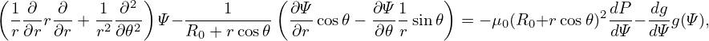−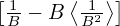 = −μ0(R0+r cos𝜃)2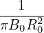−g(Ψ), |
which can be arranged in the form
|
| (590) |
which agrees with Eq. (3.6.2) in Wessson’s book[27], where f is defined by f = RBϕ∕μ0, which is different from g ≡ RBϕ by a 1∕μ0 factor.

![( ) [ ( )]
R-∂- 1-∂Ψ- = R ∂-- 1- ∂Ψ-∂r-+ ∂Ψ-∂𝜃-
∂R R ∂R ∂R [R ( ∂r ∂R ∂𝜃 ∂R )]
= R ∂-- 1- ∂Ψ-cos𝜃 − ∂Ψ-Z-
∂R R ∂r ∂𝜃 r2
∂ ( ∂Ψ ∂Ψ Z ) (∂Ψ ∂Ψ Z )( 1 )
= ∂R- ∂r-cos𝜃− -∂𝜃r2 + R -∂r cos𝜃 − ∂𝜃-r2 − R2-
( 2 2 ) ( 2 2 ) ( ) ( )
= ∂-Ψ2-∂r + ∂-Ψ--∂𝜃 cos𝜃+ ∂Ψ--∂-cos𝜃− ∂-Ψ--∂r-+ ∂-Ψ2-∂𝜃- -Z2 − ∂Ψ--∂- Z2 − 1- ∂Ψ-cos𝜃 − ∂Ψ-Z2
( ∂r ∂R ∂r∂𝜃∂R ) ∂r ∂R ( ∂𝜃∂r ∂R ∂𝜃 ∂R) r ∂𝜃 ∂R r R( ∂r ∂𝜃 r)
∂2Ψ- ∂2Ψ--Z ∂-Ψsin2𝜃 ∂2Ψ-- ∂2Ψ-Z- Z- ∂Ψ- 1- -1 ∂Ψ- ∂-Ψ-Z
= ∂r2 cos𝜃 − ∂r∂𝜃r2 cos𝜃+ ∂r r − ∂𝜃∂r cos 𝜃− ∂𝜃2 r2 r2 + ∂𝜃Z r32cos𝜃− R ∂r cos𝜃− ∂𝜃r2
∂2Ψ ∂2Ψ sin2 𝜃 ∂2Ψ Z ∂ Ψsin2𝜃 ∂Ψ 1
= --2-cos2𝜃+ ---2--2--− 2------2 cos𝜃+-------- + --Z -32cos𝜃 (587)
∂r( ∂ 𝜃 r ) ∂r∂𝜃 r ∂r r ∂𝜃 r
− 1- ∂Ψ-cos𝜃− ∂Ψ-1 sin𝜃 (588)
R ∂r ∂ 𝜃r](tokamak_equilibrium746x.png)